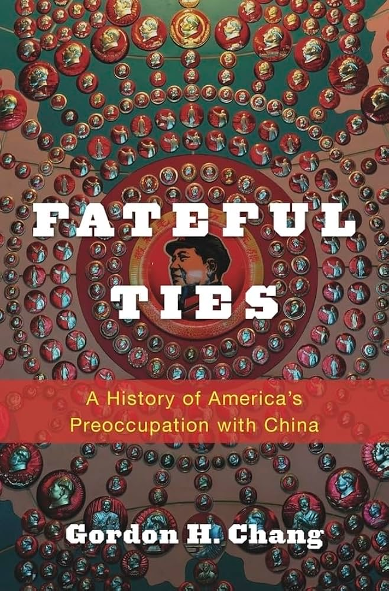
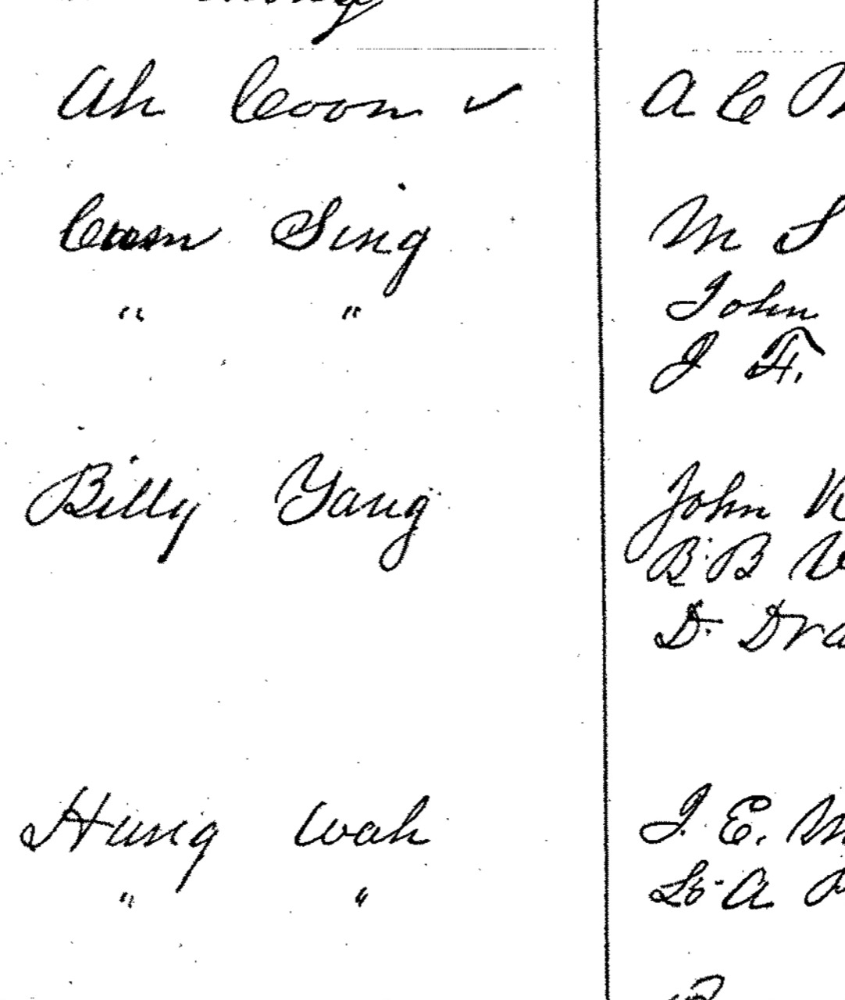
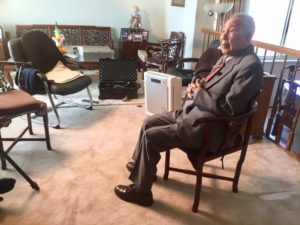
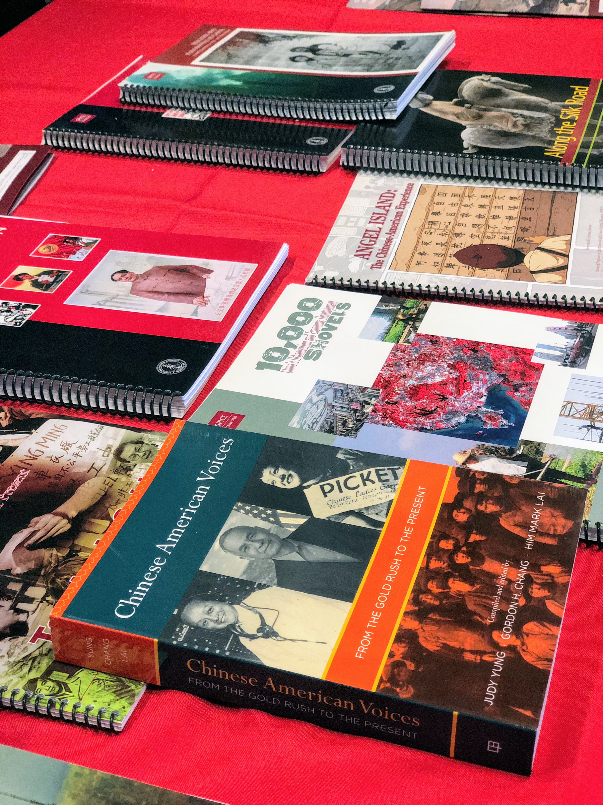
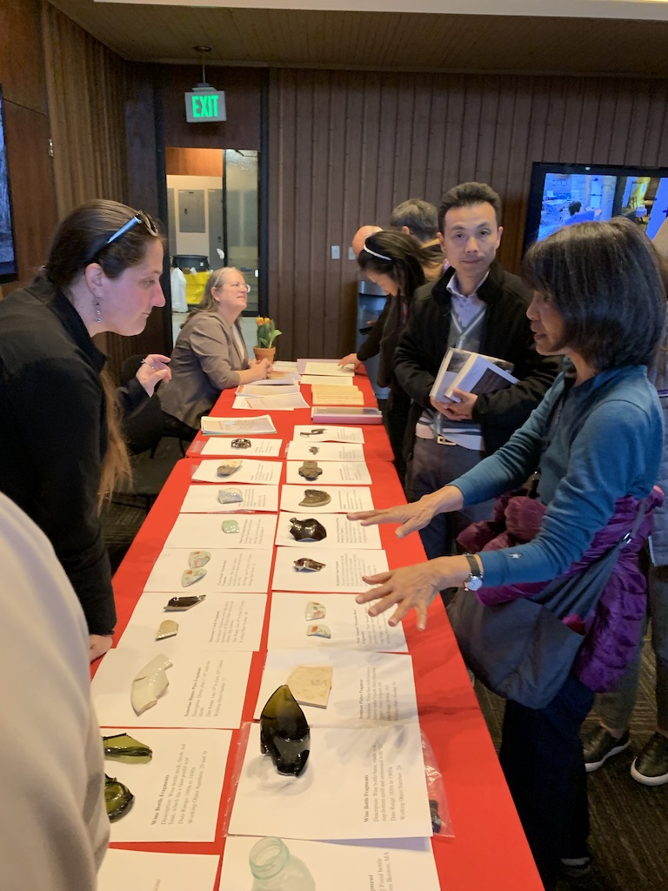
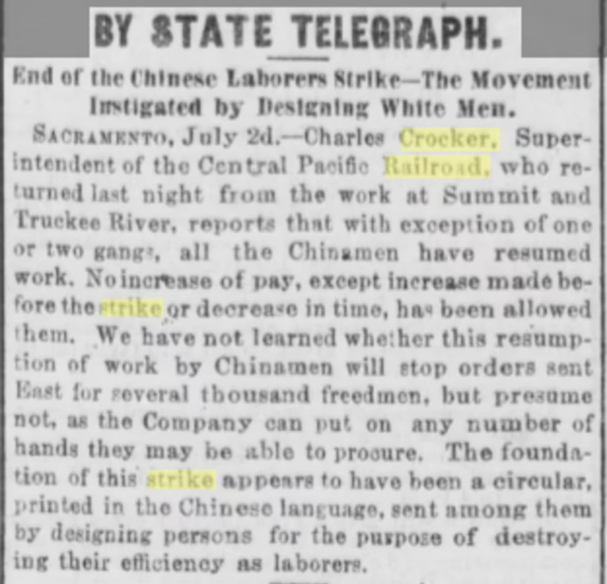
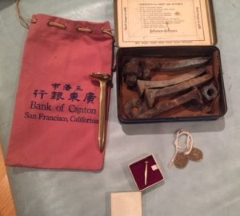

Through its research on Chinese Railroad Workers in North America, the Project located and compiled an extensive list of materials from a wide range of libraries and archives in North America and Asia and developed a set of new resources that we hope will benefit future researchers and educators.
This page lists all of these resources we have collected or developed through our efforts.

BibliographyThis exhaustive list is a compilation of more than 850 references to a wide range of primary and secondary materials from our project’s multiple publications, as well as additional items of interest. Among these sources are books, journals, magazines, newspapers, reports, interviews, theses, conferences, and films, as well as archives and collections. Where possible we provide links in the list to the rarer and more hard-to-find items, especially those that are digitized and available online.

Digital Materials RepositoryThis repository preserves a set of rare, non-digitized, and underutilized privately held materials that we located through the project and believe are essential to enrich historical analysis on the subject. Working with archivists for private collections and the Stanford University Libraries, we have digitized and are making available this repository through conventional library search tools and a featured online exhibit.

Oral History InterviewsWe have conducted oral history interviews with 40+ descendants of Chinese who participated in building the CPRR as well as several other significant individuals. These interviews range from 5 to 80 minutes and have been fully transcribed for further study and analysis.

For TeachersThrough the generous support of donors and in partnership with the Stanford Program International and Cross-Cultural Education (SPICE) the Project aimed to broaden the reach of our research by providing materials for K-12 teachers and students. SPICE developed these four high school lesson plans to be used as stand-alone modules or together as an entire unit.

Archeology NetworkThis research network is a transnational collaborative endeavor that aims to connect the large community of archaeologists who have been researching Chinese railroad workers and who are involved in managing the sites, collections, archives, and other materials that evidence that history. Some of the materials collected as part of this effort are available through our Digital Materials Repository. For more information about joining the Network please email Professor Barbara Voss at bvoss@stanford.edu.
For more information about the Cangdong Village Project please go to: cangdong.stanford.edu

Historical Newspaper ArticlesThis periodicals resource gathers historical newspaper and magazine article links from the project’s earlier research materials page. Links point to the original source or collection when available; some legacy collection links may no longer resolve.

MiscellaneousA selection of miscellaneous materials preserved from the project’s early research, including photographs, manuscripts, artwork, illustrations, and multimedia.